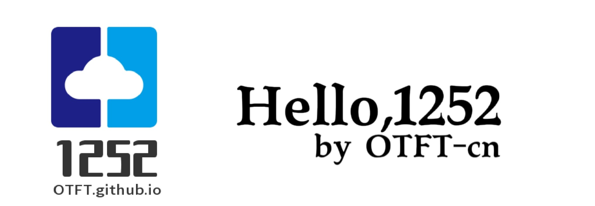

《-返回主页

360驱动大师-2.0.0.1780-纯净版 编辑于2023/2/6 16:03
文件简介
360驱动大师是一款专业解决驱动安装更新软件，百万级的驱动库支持，驱动安装一键化，无需手动操作，先进的驱动体检技术，让你更直观了解您电脑的状态，强大的云安全中心让保证您所下载的驱动不带病毒，快一点，再快一点，体验一键化安装和升级的乐趣，驱动大师陪你一路行。
用这个主要是懒得找驱动(doge)
下载链接;
https://hello1252.lanzouf.com/iX4rW0mralqh
密码1252
By OTFT 感谢访问。
QQ 1252409846